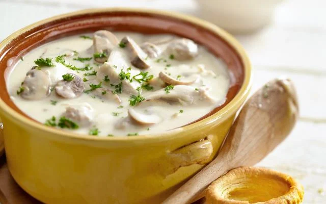

Some Belgian's Vol-au-vent

Description
The Belgian way, served with some form of potatoes. Because it's a dish, not some silly appetizer.
Ingredients
-
Chicken Broth
-
~ 1+ Whole Chicken or equivalent in Chicken Parts
NOTE: Leftover Chicken Cuttings/Parts can be found at a local friendly catering/restaurant/butcher, often by working there/asking nicely.
-
A Carrot or 2, Some Celeries and An Onion.
-
Parsley, Thyme, Bay Leaf, Garlic and a Chili
-
Salt and Pepper
-
The "Velouté"
-
~ 600 g of Minced Meat ( 50% beef - 50% pork )
NOTE: or whatever one prefers, but poor quality minced meat will fuck shit up
-
~ 750 g Mushrooms
-
~ 2-ish Egg Yolks
-
~ 100 g-ish Breadcrumbs
NOTE: Mix up old, dried out bread in some blender-thing, less waste and you already paid for that shit
-
~ 150 g All Purpose Flour
-
~ 150 g Butter
-
~ 2 or 3 Whole pieces of Star Anise
-
~ Half a Lemon
-
Some Salt, Pepper,
Fresh Nutmeg and Cayenne
-
A Clove or 2 of Garlic
Instructions
-
Chicken Broth
-
Barely Cut up the Veggies
-
Throw Chicken Stuff and the Veggies In the Pot with the Parsley, Thyme, Bay Leaf, Garlic and a Chili
NOTE: Leave some Parsley for Later
-
Fill up with Water
NOTE: Cover Everything
-
Let it Boil
-
Lower Heat, Let Simmer ( Partially Covered for 2+ hours, or until Sufficiently Reduced ), Skimming Top Occasionally.
-
Consider Starting Step 1 and 2 of the
"Velouté" Vol-au-vent
-
Remove Chicken from Pot, Let it Cool
-
Leave Broth Simmering Until Needed
-
Remove Meat From Cool Chicken
-
The "Velouté" Vol-au-vent
-
Mix the Breadcrumbs, Egg Yolks and Minced Meat.
NOTE: Add Pepper, Salt and whatnot to the Mix
-
Roll the Meat-Mix into Small, equal-ish sized Meatballs
NOTE: Small means about a diameter of about ~ 1,5 cm ( thats ~ 0,6 inch )
-
Bring the Broth back to a Boil
-
Grab a Suitable Colander, Throw in the Meatballs and put that in the Broth
-
Remove when Cooked after a few Minutes
-
Cut Mushrooms in Quarters
-
Melt Butter in a pan, Add Mushrooms, then Garlic and Some Pepper and Salt to Taste
-
Put Mushrooms Aside When Ready
-
Melt Butter over Low Heat
-
Mix with sifted Flour until Paste ( aka Roux )
NOTE: Should smell a bit like Cookies and look Golden-ish
-
Slowly Add Broth ( trough a Colander ) while Whisking Away
NOTE: Avoid making it Runny by Adding Broth to Fast due to Tired Arm/Bored Brain
Second NOTE: Lumps mean you Fucked Up.
-
Add the Mushrooms, Chicken Meat Pieces and Meatballs to the Sauce
-
Add the Star Anise to the Pot
NOTE: It's Supposed to Come Back Out before Serving, Some Tool to Retrieve it is Recommended
Second NOTE: Unless one does not Care and makes it so that the one with the Star Anise has to do something like the dishes or whatever.
-
Add Salt, Pepper,
Fresh Nutmeg, some Cayenne and a drop of Lemon Juice to taste.
NOTE: It's not supposed to be spicy, but a bit of "warmth" is nice
-
Laaadidaaa-it-up with Some Shredded Parsley